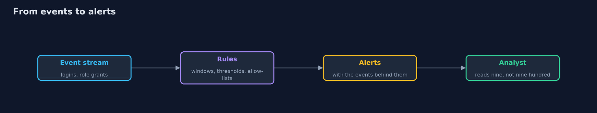
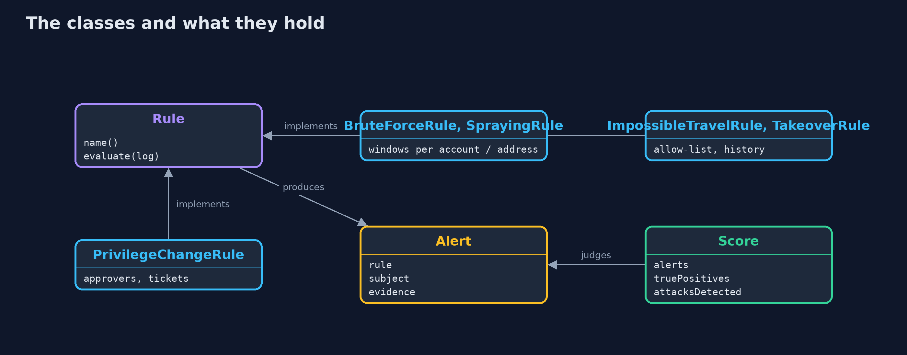
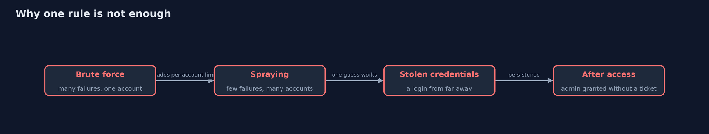
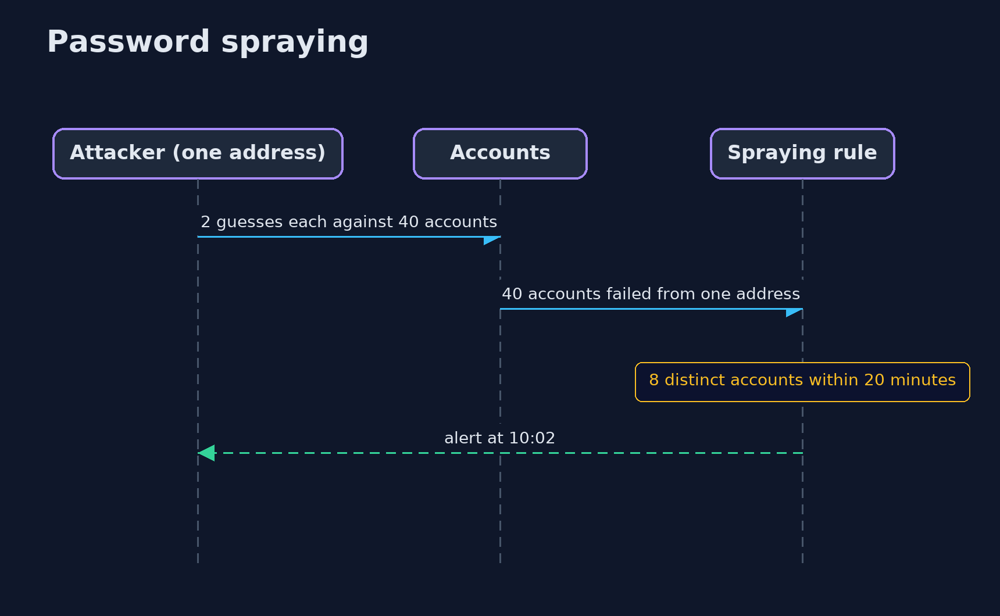

Detecting Attacks in Logs
src/main/java/com/jk/explore/security/detect/
├── Alert.java What a rule reports: which rule, about whom, when, and the events that made it fire
├── BruteForceRule.java At least {@code threshold} failed logins for one account within {@code window}: someone is guessing that account's password
├── City.java A place with coordinates, for distance calculations
├── DetectionDemo.java Runs the detection story in four numbered acts and prints exact, repeatable results
├── Event.java One line of the audit log
├── ImpossibleTravelRule.java Two successful logins by one account from places an aeroplane could not connect in the time between them
├── PrivilegeChangeRule.java Granting the admin role is rare and always approved: alert when the actor is not an approver, or when the grant has no change ticket
├── Rule.java A detection rule: reads the whole log, in time order, and returns alerts
├── Scenario.java One synthetic Monday for a bank with 200 accounts: ordinary logins with a few typos, five VPN users, a traveller, two people who forgot their password after a holiday, ticketed admin grants and one break-glass grant, and four real attacks
├── Score.java How a rule did against the ground truth: alerts, true and false positives, and which attacks it noticed at all
├── SprayingRule.java Password spraying tries one or two common passwords against <em>many</em> accounts, staying under the per-account limit that the brute-force rule watches
└── TakeoverRule.java A success right after a run of failures, from an address that has never succeeded for this account before: the guesses worked
Logs only help if rules turn them into alerts: brute force, password spraying, impossible travel, takeover and privilege changes each need a rule, and each rule must be measured against a normal day of the same logs, because a threshold that catches the attack and buries the analyst in false alarms is not detection.
Logging records what happened. Detection decides which of it is an attack. The two are different jobs: a log with every event and no rules is a library no one reads. This project writes five detection rules over the sign-in and admin events of a bank with 200 accounts, runs them on one synthetic Monday that contains both ordinary behaviour and four real attacks, and measures them, because a rule is only as good as the alerts it produces on a normal day.
The rules, each a hypothesis about an attacker: - Brute force: at least N failed logins for one account within five minutes. Someone is guessing that account's password. - Password spraying: failures against many different accounts from one address. The attacker tries one or two common passwords per account, so the per-account rule never fires. The rule counts accounts per address. - Impossible travel: two successful logins by one account from places that no aeroplane connects in that time. Needs a list of the VPN's addresses, which otherwise look like the VPN's city. - Success after failures: a success from an address that has just failed repeatedly and has never succeeded for that account before: the guesses worked. - Privilege change: the admin role granted by someone who is not an approver, or without a change ticket.
The day has the usual noise: typing mistakes, two people back from holiday who forget their passwords, five staff on the VPN, a break-glass admin grant at 3 a.m., and a phone whose carrier address is placed in the wrong city. The scoring compares every alert with ground truth: true positives, false positives and which attacks were noticed at all.
Maps to: OWASP Top 10 (2025) A09 Security Logging and Alerting Failures · NIST CSF Detect (DE.CM, DE.AE) · MITRE ATT&CK T1110 (brute force, including password spraying) and T1078 (valid accounts) · OWASP ASVS 5.0, the logging and monitoring chapter.
The idea in everyday terms
A night guard watching one hundred doors. A rule that rings an alarm at every rattled handle will ring all night and be switched off; a rule that waits for three handles on the same door in a minute, and ignores the cleaners' door, rings rarely and means it. The guard's value is the alarms people act on, not the doors watched.
The scenario
One Monday of logs for a bank with 200 accounts: 768 logins and 4 role grants, 113 events of which belong to four attacks (spraying, brute force, impossible travel, privilege change). The data is synthetic and generated with a fixed random seed, so every run is the same and the ground truth is known.
Run
./gradlew run
The demo tells the story in 4 acts, each printing exact numbers that the tests check:
| Act | What it shows |
|---|---|
| 1. One Monday of logs | 772 events: 768 logins and 4 role grants; 113 of them belong to 4 real attacks (spraying, brute force, impossible travel, privilege change). |
| 2. A first version of each rule | The first versions notice all four attacks but raise 29 alerts, 21 of them false: impossible travel flags the VPN, success-after-failures flags every typo. |
| 3. Tuning one threshold | Brute-force thresholds of 3 and 5 raise 2 false alarms (two people who forgot their password); 10 and 25 catch the attack with none; 40 misses it. |
| 4. The tuned set, and what it tells the analyst | Five tuned rules give 9 alerts for the day, 7 true and 2 false, and every attack (A, B, C, D) is noticed; the false ones are a break-glass admin grant and a phone placed in the wrong city. |
Test
./gradlew test
13 tests in DemoRunsTest, DetectionTest. The day of logs is synthetic with a fixed seed, so the demo prints the same text on every run.
What the simulation got right, and what it left out
The events are objects, the rules are classes with sliding windows, and the scenario is generated by a seeded random generator, so the ground truth is exact. The rules are written the way a detection engineer would write them, and could be translated to queries. Nothing reads real logs.
Technologies and versions
Every version below is pinned in the project's build files and was the latest stable release when the project was built.
| Technology | Version | Used for |
|---|---|---|
| Java | 25 | the language and runtime; a Gradle toolchain finds or downloads the JDK |
| Gradle | 9.8.1 (wrapper) | build and run; nothing to install, the wrapper downloads it |
| org.junit.jupiter:junit-jupiter | 6.1.3, set by junit-bom | JUnit 5: the tests (tests only) |
| org.junit.platform:junit-platform-launcher | 6.1.3, set by junit-bom | JUnit platform launcher, which Gradle needs to run the tests (tests only) |
| videokit | repository tool (tools/videokit) |
the narrated video and animation: Piper en_US-amy-medium, speed 0.8, longer pauses (the amy-slow voice) |
Learning Material
| Document | What it is for |
|---|---|
| Problem statement | the situation and what the project must show |
| Prerequisites | what you need to know first |
| Detecting Attacks in Logs, explained | the acts in prose |
| Session guide | a one-hour lesson with exercises |
| Animated walkthrough | the acts step by step, narrated |
| Threat model | what is protected, who could harm it, and how, using STRIDE |
| Spec | what this project must be true of |
| Expected output | the golden demo output every test and every port checks against |
The idea in one picture
Rules read the event stream and produce alerts that an analyst can act on.

Where each piece sits
Every rule has the same shape; the score compares alerts with ground truth.

How the data moves
Each attack leaves a different trace.

Who calls whom, in order

Video
video/detecting-attacks-explained.mp4 (with .m4a audio and .srt subtitles) is built by video/build_video.sh. Rendered media is not committed.
What it costs
- Every threshold is a trade. Lower finds more attacks and more noise; higher is quiet and blind. The right value depends on your normal day, which is why you measure.
- Allow-lists need owners. A VPN address list that is not kept up to date silently turns the rule off, or turns it back into noise.
- Context cuts false positives most: knowing an account's usual addresses, roles and change tickets (the history and ticket data here) is worth more than a smarter threshold.
- Some false positives are healthy. A break-glass grant should alert; it is a false positive for an attack and a true positive for a review.
- Attackers adapt. Low and slow guessing, residential proxies near the victim, and logins at the victim's usual hours defeat simple rules, so rules need layers and review.
When this is too much
Do not write a hundred rules before the first ten are tuned and owned. Start with the attacks that matter to your system, measure each rule on a week of real logs, and keep a short list that people trust. A rules engine, a SIEM or an OpenSearch alert is where these rules run in production.
Where you have already met this
- SIEM correlation rules and "detection as code" repositories (Sigma rules).
- Cloud sign-in alerts such as "unfamiliar sign-in properties" and "atypical travel".
- Account lockout, which stops brute force but is itself a denial of service for spraying.
- MITRE ATT&CK technique pages for brute force and valid accounts.
Where this sits
This project is in detection-and-response and builds on security-logging, which makes the events these rules read. The with-OpenSearch version expresses the same rules as saved queries and alerts. The next project, incident-response, takes over when an alert is real.